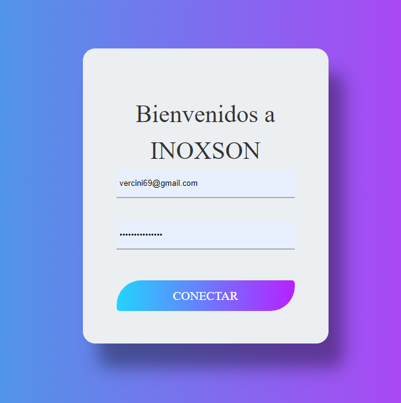
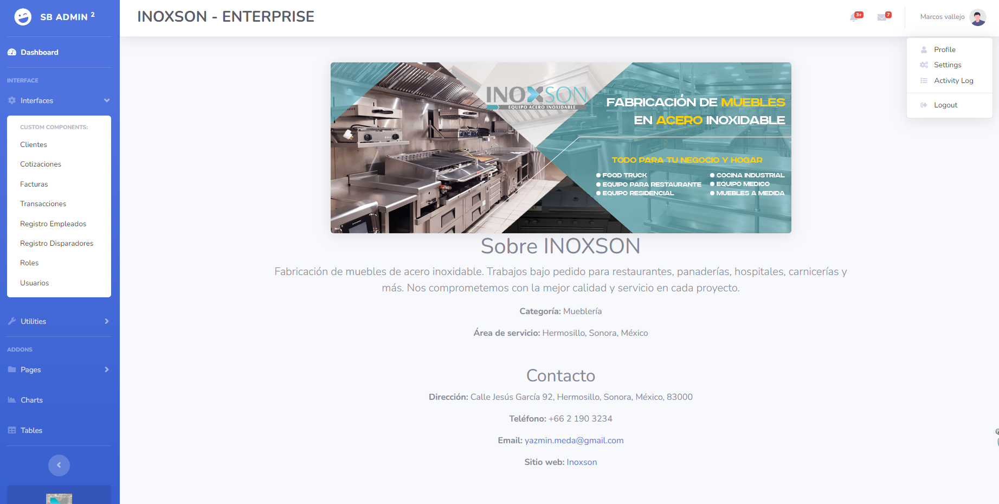
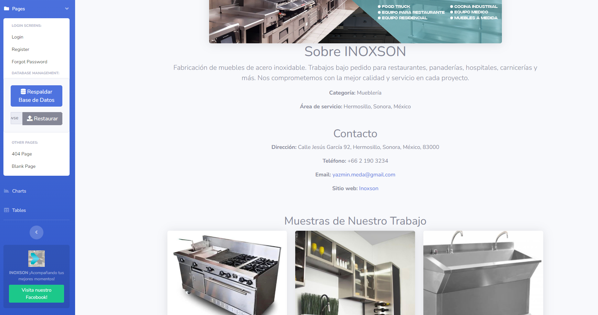
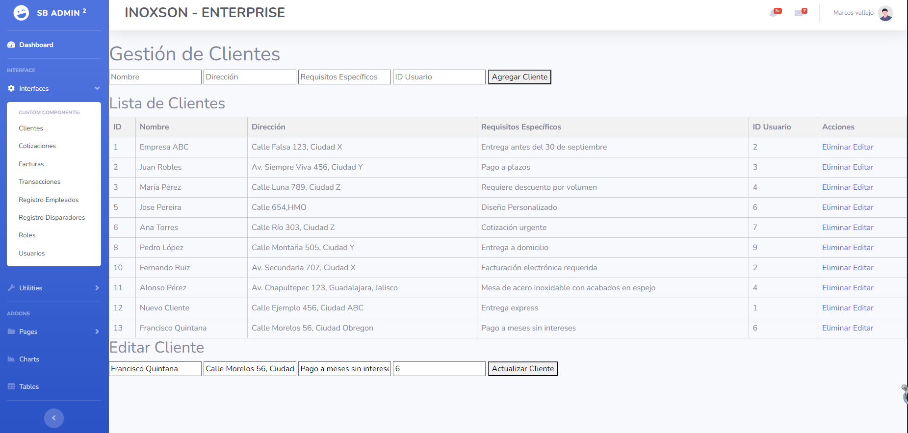
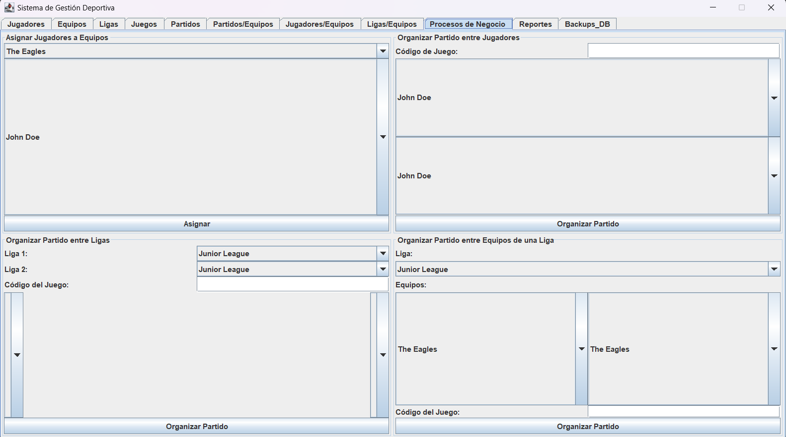
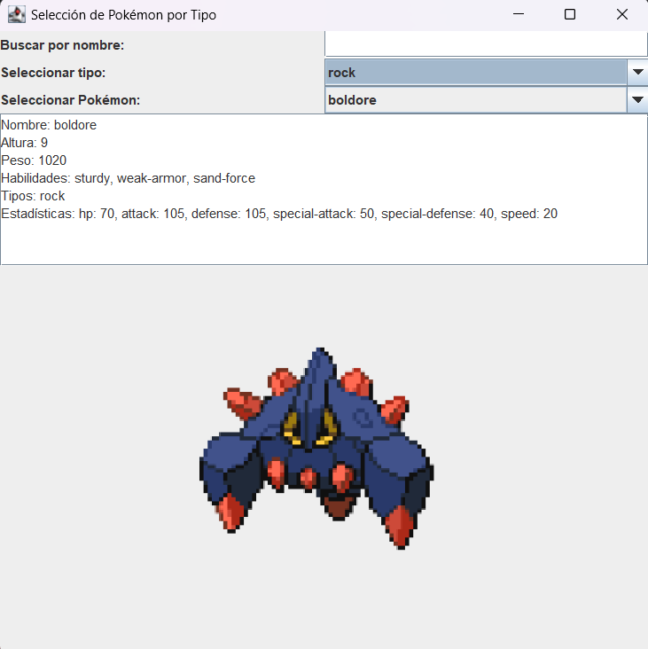
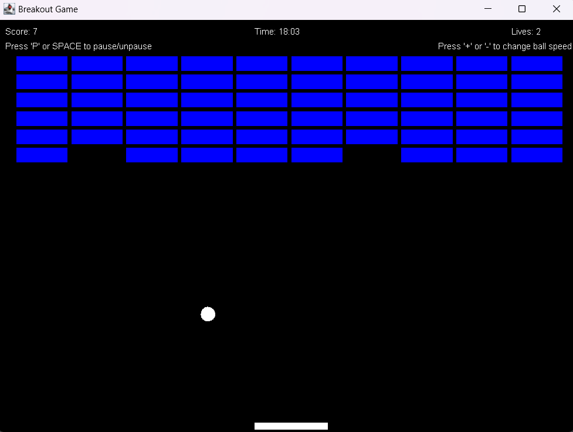

Proyecto 1: App Web para INOXSON
Actualmete estoy diseñando una app web para INOXSON, un negocio local de Hermosillo, Son. El proyecto consiste en una app web para un negocio de fabricacion de muebles de acero inoxidable con la finalidad de que manejen sus procesos
internos, como lo seria la gestion de los clientes, sus cotizacion, facturas, transacciones financieras, registro de usuarios(solo por el admin), entre otras funciones que se agregaran para ir gestionando el manejo del negocio
puesto que de momento lo hacen de forma mas analoga o en excel.
Lenguajes utilizados:
HTML, CSS, JavaScript, PHP, MySQL, Bootstrap




Proyecto 2: App Gestion De Ligas Gamer.
Igual que el proyecto 1, acttualmente estoy mejorando este proyecto en cuanto a diseño y agregando funcionalidades extras o que me faltaban al inicio; a pesar de ser de mi 4 semestre en universidad. Esto con la finalidad de poder realizar
testeos como QA para una materia de la carrera, esta aplicación es un "Sistema de Gestión Deportiva de ligas gamer" que permite gestionar diferentes aspectos relacionados con partidas y competiciones referentes a videojuegos, entre
otras funcionalidades. Está diseñada con una interfaz gráfica de usuario (GUI) utilizando la biblioteca Swing de Java y MySQL con postgreSQL.
Lenguajes utilizados:
Java, MySQL con postgreSQL

Proyecto 3: PokeApi.
La aplicación desarrollada con PokeAPI permite visualizar datos de Pokémon en formato de tarjetas coleccionables usando Java. El usuario puede filtrar personajes por especie u otras características, y al seleccionar una opción, se
cargan los personajes correspondientes en un combo-box para su visualización. También es posible buscar Pokémon por nombre. El programa incluye manejo de excepciones, configuración mediante archivos de propiedades, bitácoras (Logger),
uso de hilos, acceso a la API REST con URL/URLConnection y procesamiento de JSON con GSON.
Lenguajes utilizados:
Java, JSON - GSON

Proyecto 4: Juego de Breakout.
El BreakoutGame es una implementación del clásico juego Breakout, donde el jugador controla una barra que mueve de izquierda a derecha para golpear una pelota que destruye ladrillos en la parte superior de la pantalla. El juego se
desarrolla en una ventana de 800x600 píxeles, con una segunda ventana que muestra los puntos y el tiempo. Se puede pausar con la tecla "P" y reanudar con la barra espaciadora. El jugador puede ajustar la velocidad del juego con
las teclas "+" y "-", ganando puntos tanto por golpear la pelota como por romper ladrillos.
Lenguajes utilizados:
Java
